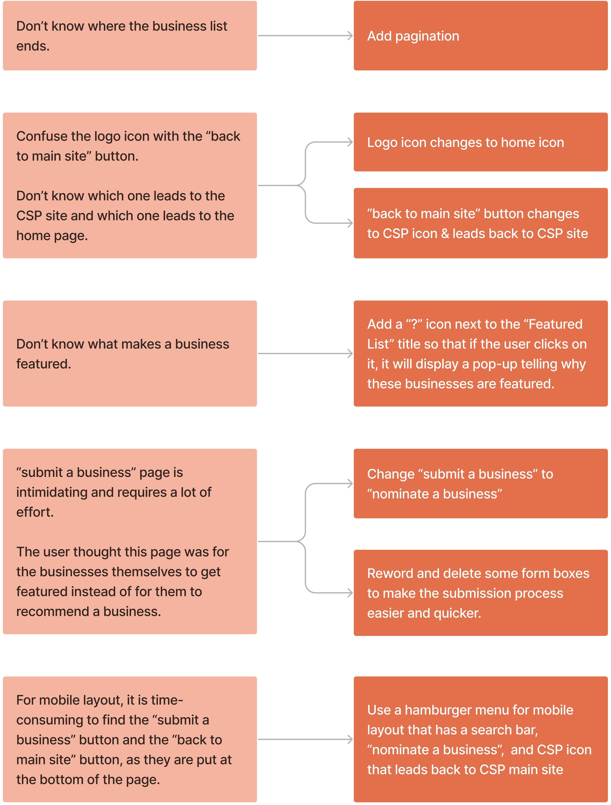

Shop Local Minority Business Initiative
Timeline
5 weeks
My role
UX researcher, UX designer, Front-end developer
Tools
Figma, Miro, HTML, CSS, Bootstrap
Background
Our client, Center for Shared Prosperity (CSP), is an organization
that aims to find solutions regarding socioeconomic inequities and
building a model of community-university collaboration at Carnegie
Mellon University (CMU).
Our task was to extend the
original CSP website
to another responsive website reiterating the goals of CSP and a
database of local minority-owned businesses in Pittsburgh. We wish
to create a platform for the CMU community to get access to a
searchable database and educate student, faculty, and staff
populations about the power of supporting local minoritized
businesses.
One challenge we face is that we are not able to do back-end
development such as actually linking the database to the website.
Therefore, our final deliverable is not a functional website that
links to the database but a prototype that shows the overall design
of the website.
Competitive Analysis
We reviewed the websites of other committees and organizations with similar overarching goals and website implementations to our website. We then analyzed their strengths and weaknesses to help us recognize how we can improve our website.

Based on competitive analysis and discussion with our client, we
decided to implement a website with a search bar at the top, filters
that can turn to dropdown menus on mobile screen, a carousel for a
featured list, card layout for business list, and a business info
page for each business. We also included a form for users to
recommend a local minoritized business.
One unique feature of our website is that we use a Scottish Terrier
icon as a clickable popup that tells why CMU community should
support local minoritized business. This can make our users feel
connected with the site, as the Scottish Terrier is the official
mascot of CMU.

Target Audience
Our target audience is the CMU community, including students,
faculty and staff. To ensure that we are reaching the proper
audience, our website has a section dedicated to educating the CMU
community about the power of supporting local economies with an
emphasis on the value of patronizing minority businesses.
Our website contains a directory of minority-owned businesses, but
we expect the majority of the visitors to be the potential customers
of these businesses from the CMU community, not the owners
themselves.


Lo-fi Wireframes
Desktop

Tablet

Mobile

Usability Testing
We tested four users from the CMU community, including 2 students, 1 faculty, and 1 staff. The faculty and staff tested the desktop layout, student 1 tested the mobile layout, and student 2 tested the tablet layout. The testing sessions are all conducted in person. We reminded the users to always talk aloud their thought process, gave them 5 specific tasks to complete (4 simple ones and 1 complex one), and enabled them to explore the prototype on their own at the end of the sessions.
Tasks:
- Find how to submit a local minority-owned business you like.
- Then, find out how to go back to the home page.
- Find where to subscribe to the newsletter.
- Find the address of the Center for Shared Prosperity.
- Look for the first business in the Arts & Culture category in Oakland; find that business's contact number and address.
Problems discovered & Plans to tackle them:
Hi-fi Wireframes
Desktop
.jpg)
Mobile
.jpg)
Color Scheme
Our client already has a primary and secondary color palette that he
wants us to use for this new website. Overall, the colors show a
vibrant website personality, as the website is aimed at a relatively
young population (CMU community).
The primary color palette is provided below. There are three colors
chosen as the foundational colors for the website. Black and white
are for the text, and the cream color serves as the background color
for the whole website. The client chose the cream color as it
specifically references manila folders used in government documents.

The secondary color palette is provided below. These colors are used for buttons, sections' background colors, etc. This secondary color palette is a set of vibrant colors inspired by construction paper used in making protest posters. The reason our client chose these colors is that the website identity can be physically replicated by using standard crafting supplies, thus showing that this website is meant for everyone and can be made by everyone.

Reflection
This was a great opportunity to be able to complete a project that solves a client's need! It was interesting to design a website that is based on the style of another site. I enjoyed my first time collaborating with two other members for a UX design project, designing new website using user-centered approach, and writing code for a website together. Group work and user testing sessions brought so many new perspectives that I have never thought of, and it was satisfying to see our prototype gradually improving.